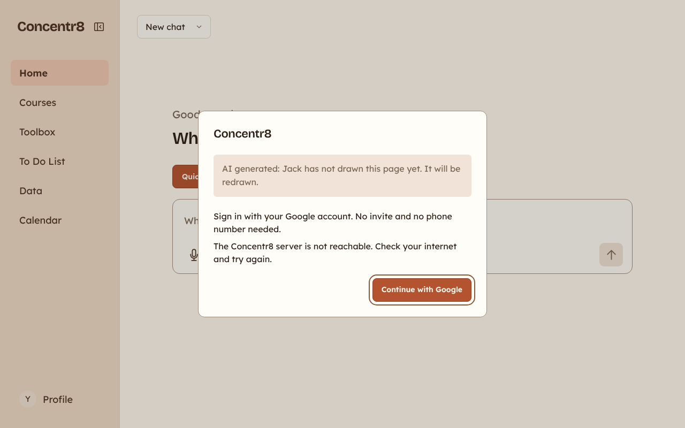
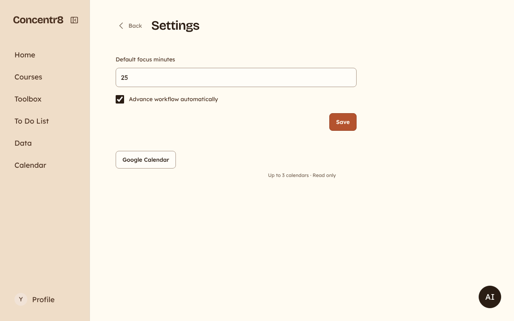
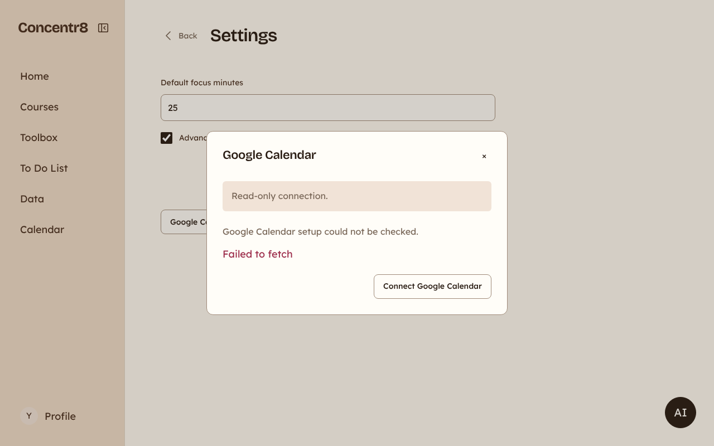
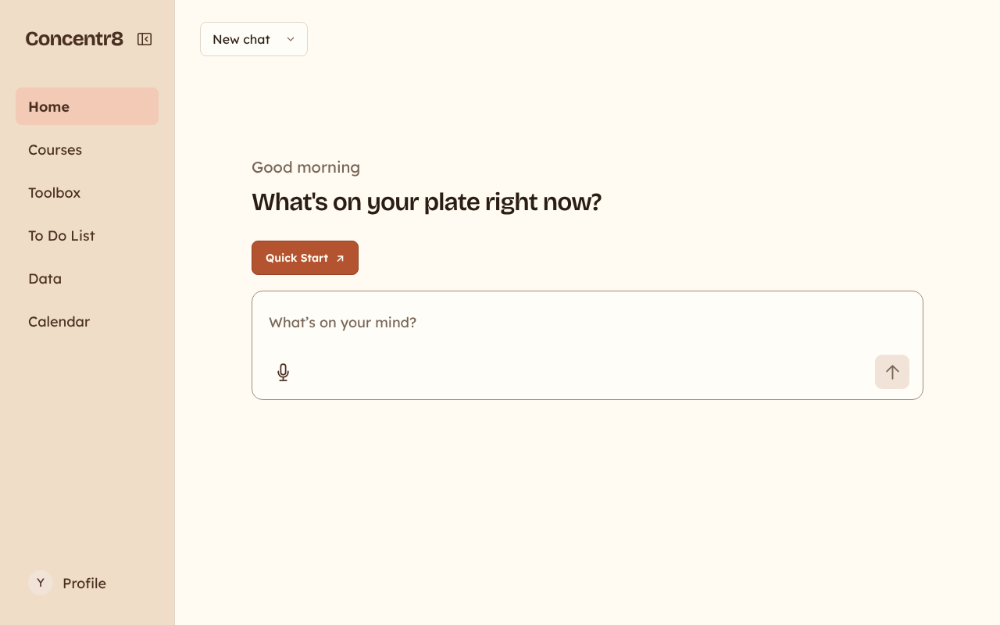

Static mockups for docs/plans/simplicity-redesign.md. Left: the app on main today (screenshots).
Right: the proposal, drawn only with the tokens in tokens.css. Numbers come from docs/design/baseline.md.
1. First start: signing in
Today a new student sees a blank page while the server wakes up. If Google cannot open, a dialog with an internal note appears.
Before. Blank page, or this fallback dialog.

After, normal case. Same automatic trip to Google, but with one line of status. 0 clicks.
Concentr8
Opening Google sign-in…
After, when Google could not open. Plain words, one button.
Concentr8
Sign in with Google to start. It takes a few seconds.
We could not reach Concentr8. Check your internet, then try again.
2. First start: calendar
Today the calendar is four levels deep: Profile, Settings, a button, a dialog, then tick a calendar and save (10 clicks).
Proposal: one screen right after sign-in, one reason, one button. The first calendar is selected automatically.
Before. Settings, where the calendar button hides.

Before. The calendar dialog with a raw error.

After. Step 2 of 3. 1 click, then Google.
Step 2 of 3
Plan around your real day
Concentr8 reads your Google Calendar to find free time for your to-dos. It never changes your calendar.
After, waiting for Google. The button shows progress; the student can still leave.
Step 2 of 3
Plan around your real day
Finish in the Google window. Concentr8 continues by itself.
After, when it failed. Never a raw error.
Step 2 of 3
Plan around your real day
The calendar did not connect. Nothing was changed. You can try again or do it later in Settings.
3. First start: the first to-do
Today a new student lands on an open question with three fake to-dos hidden on another page. Proposal: one focused field. Enter creates the to-do at once, without waiting for the AI.
Before. Home for a new student.

After. Step 3 of 3. The field has focus: type, Enter.
Today Home names no task, and the fastest way into a focus session is Toolbox, Timer, Start. Proposal: the most urgent to-do is the Next card with the one filled button. Two more to-dos, an add row, then the chat.